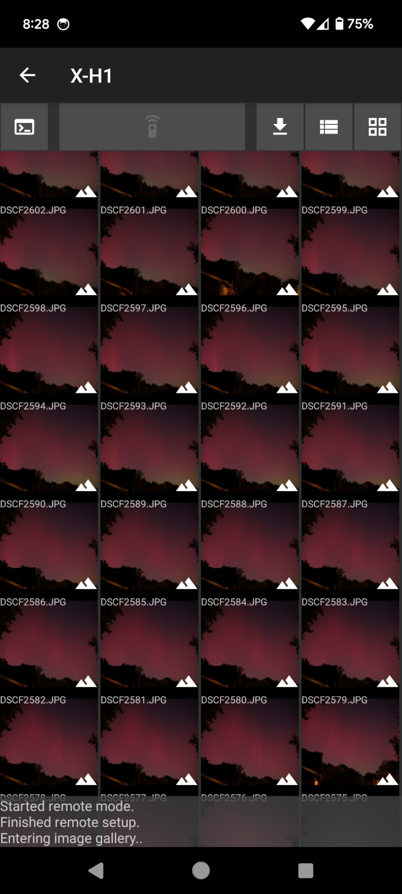

Fudge is a cross-platform open-source alternative to Fujifilm’s official camera app.



This app isn’t finished yet, so don’t set high expectations. Fuji’s implementation of PTP/IP has many different quirks and bugs, so it’s not easy to create a stable client that works for all cameras.
Improvements over XApp / Camera Connect
- Location and notification permissions are not required or requested
- More responsive native UI
- Slight performance improvements
- USB-OTG connectivity support
- Supports PC AutoSave and (partially) Wireless Tether
Missing features
- Bluetooth pairing
- Geolocation
- Liveview/remote shutter